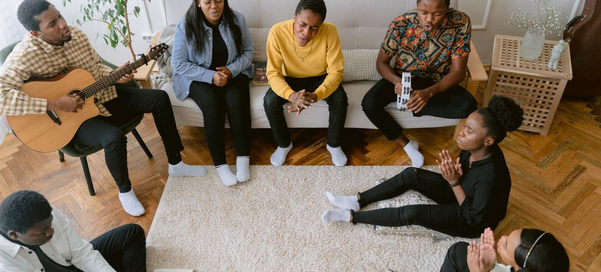
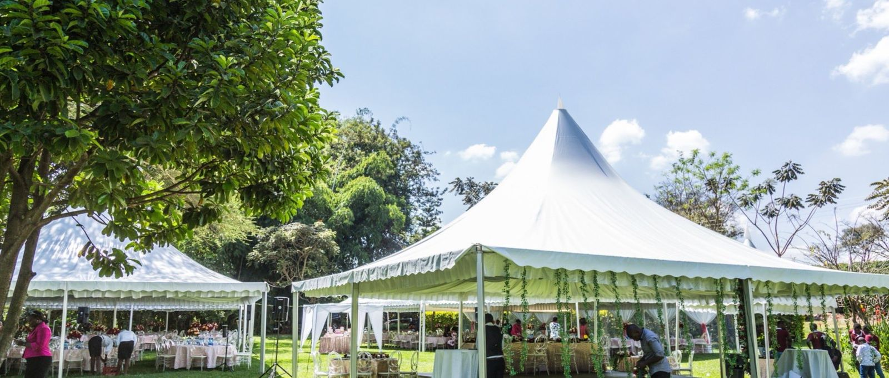
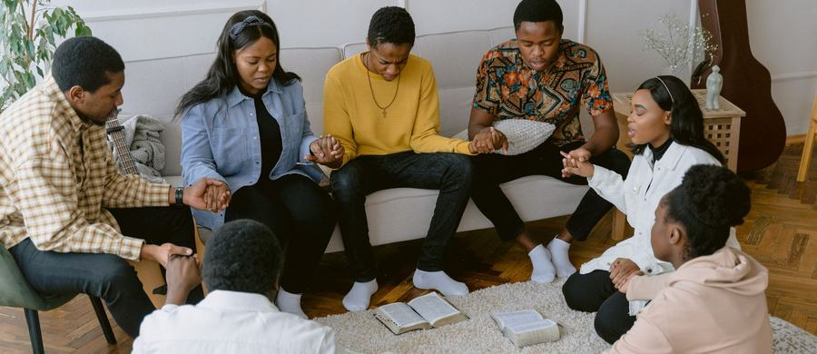
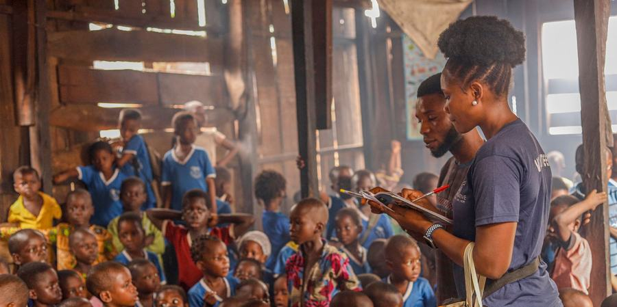
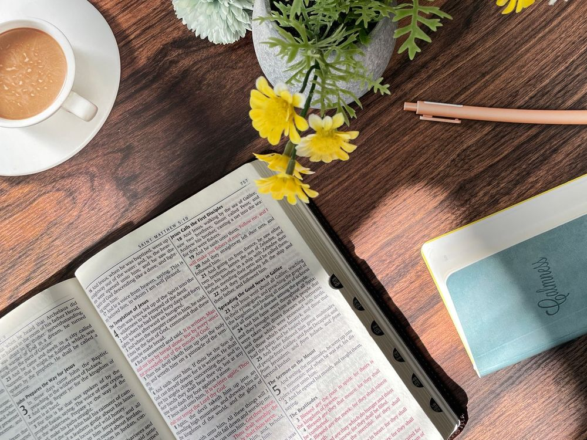
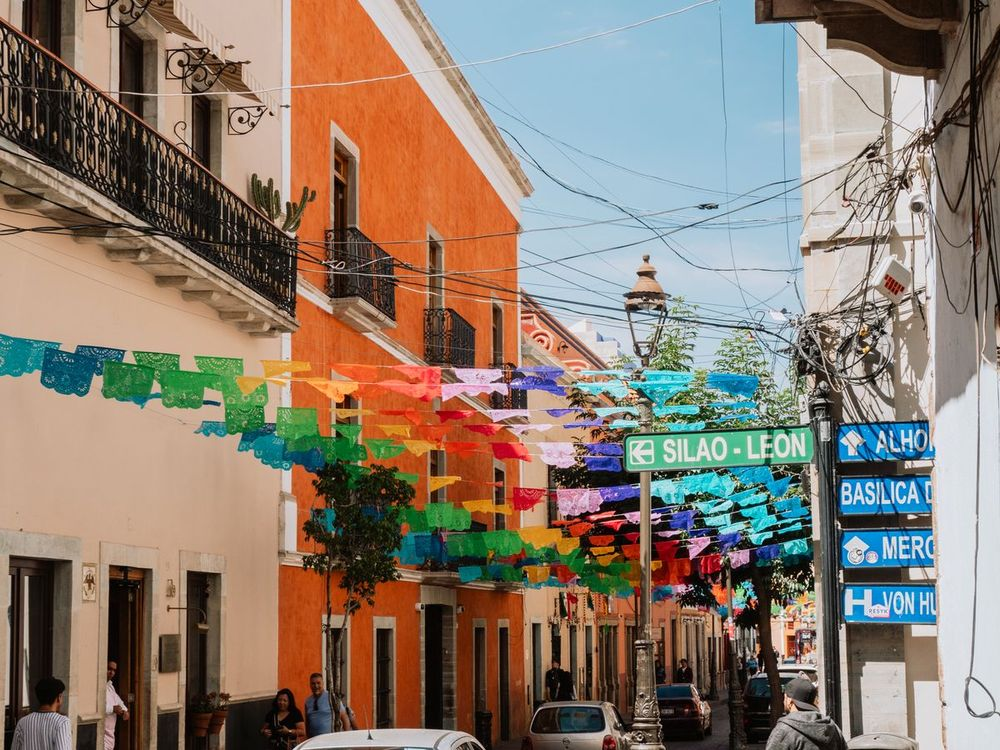
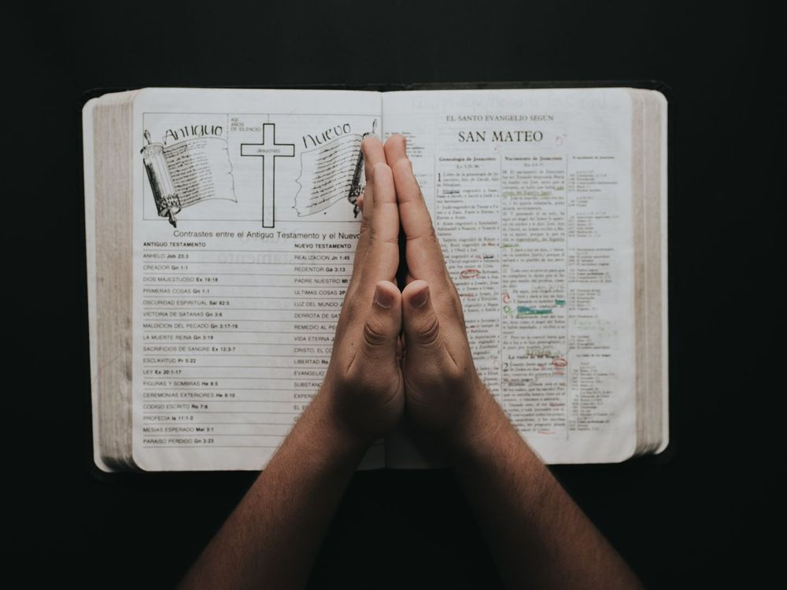
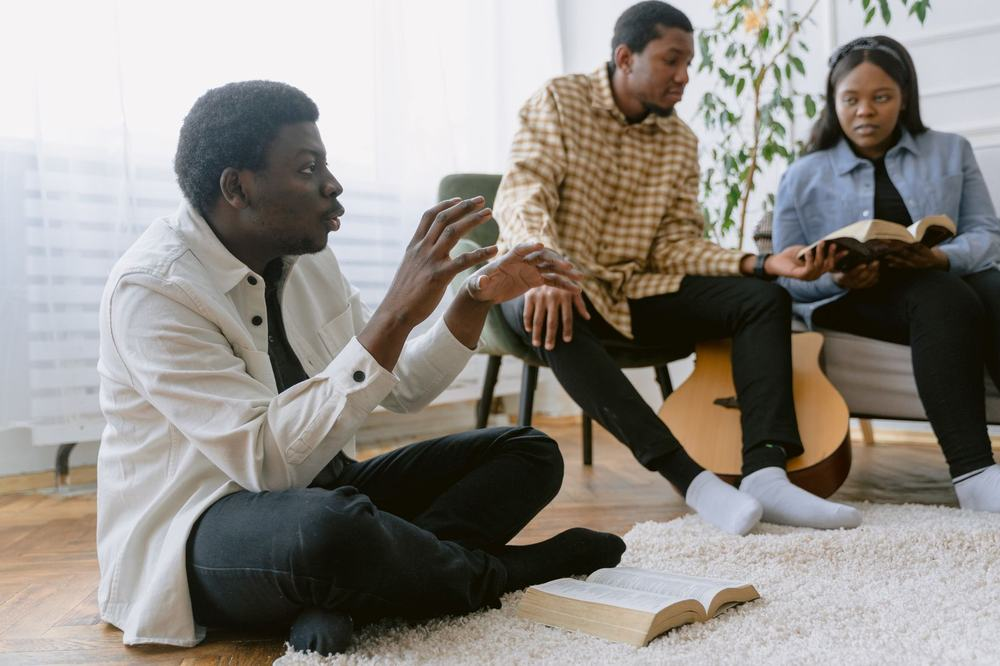

College students,
trained and sent to the nations
every school break.
SVM is a student movement in Bryan–College Station, Texas. We train American college students and send them on short-term mission trips to partner churches abroad. Students pay only their flight. The churches that receive them are never asked for money or special treatment.
Sending is expensive.
Students have no money.
We still want to send them every break.
The usual way costs too much
Flights, rooms, meals and program fees add up fast. Often the sending side raises a large sum, or the field ends up carrying part of the cost.
Students have time, not money
American college students have long breaks and a real desire to serve. What they do not have is a budget. If a trip is expensive, most of them can never go.
So we do it differently
Students train every week and pay only their flight. Every trip is planned and agreed with the local church before anyone leaves, so the field is asked for nothing special: no special meals, no nicer room, no fees.
A mission trip should open doors, not drain the people who open them.

We don't just talk about missions.
We mobilize, train and send.
Mobilize
Awaken and gatherWe awaken students to God's heart for the nations through gatherings, campus outreach and personal invitation, and we welcome them in.
Train
Disciple and equipEvery student is discipled and prepared through weekly gatherings, prayer and hands-on evangelism before they are ever sent.

03Send
Go to the nationsWe build teams by destination and send them out, short-term first, with a path toward one to two years and a lifetime on the field.
“Here I am. Send me.” Isaiah 6:8
“The evangelization of the world in this generation.”
In the summer of 1886, a hundred college students at a conference in Mount Hermon, Massachusetts committed to go overseas. It became the Student Volunteer Movement, and over the next forty years more than 20,000 young people left their campuses for the nations. One move of God among students changed the course of the world. Then the fire faded.
Today we are gathering a new generation to light it again, starting with students in Bryan–College Station.
“And this gospel of the kingdom will be preached in the whole world as a testimony to all nations.”Matthew 24:14
See the vision
A few minutes on what SVM is and the call behind it. Press play.
Those who go,
those who send,
and those who receive
SVM connects college students who want to serve, the people who stand behind them in prayer and giving, and the churches and missionaries on the field who are asking for workers.
Pay for your flight. Go every break.
You do not need to raise a big budget or join for life. Train with us every Sunday afternoon, pick a field and a season, and go.
- Live and serve the way the local church lives. No program fees
- Stay one month or longer. Extend by changing your flight
- Weekly training and gospel-message language practice in the app
- Short-term first, with a path to mid- and long-term

Not everyone goes. Everyone can send.
Every student who goes is carried by people who pray and give. Stand behind a nation and its team, before, during and after the trip.
- Carry a nation in prayer and follow its team in the SVM app
- Give toward weekly training, the conference and sending
- Stand with a team as a church or partner
- Hear the stories when students come home
To give, talk with an SVM leader at the Sunday Mission Gathering or the Nov 20 conference.
Give onlineGifts to IM Mission Foundation Group Corp (EIN 99-2847865), a 501(c)(3) nonprofit, are tax-deductible to the extent allowed by law. You will receive a receipt by email.
Pray with us in the app
Receive trained students who come back again.
Host Into the World teams for English classes, outreach and discipleship. SVM trains and screens students in the US and sends you an approved team.
- Teams in December, January and May–August
- Approved roster and arrival dates from SVM headquarters
- Students trained weekly, gospel message memorized in your language
- Your field page, photos and security settings managed with you
One night in Bryan–College Station
where it all begins
Worship, the Word and a Tent Village with a booth for every nation. Meet the teams already on the field and write your name on the nation you will carry. Free for students and young adults.
- Tent Village · worship · the Word · the sending
- Sign up in the app with a QR code and sign your nation that night
- Free to attend · bring a friend
An independent movement,
backed by the church
SVM is a campus-based sending movement, not owned by any one church. It is led by a team of co-directors and carried by local churches and IM Mission together.
A registered nonprofit
IM Mission Foundation Group Corp is a 501(c)(3) nonprofit organization (EIN 99-2847865). SVM is the name of its student mission program.
Meets every week
Sunday Mission Gathering, 2–4 PM, IM Friend Baptist Church, 408 E 24th St, Bryan, TX 77803.
Talk to a real person
Questions are welcome any time: imamerica2414@gmail.com
Core directors
Three co-equal leaders, pastors and a Texas A&M campus student leader, share the vision, the finances and the oversight.
Supporting partners
Local churches and IM Mission stand behind the movement with prayer, funding and a global field network.
Four teams, all year
Mobilize, Train, Send and Tell the Story: the teams that carry the work long after the conference ends.
Host committee
Respected regional leaders help guide the movement and open doors across the community.
Co-hosted by IM Friend Baptist · First Baptist Church, Normangee · Country Fellowship
Not ready to commit?
Just stay in touch.
Leave your email and we will send occasional updates: stories from the field, what to pray for, and what is coming next. No app sign-up needed.
Everything you may want to know
before you go
The fields, safety, weekly training, the app and how hosting works, all in one place.
Five promises that make going possible
Pay only for your flight
You live with the local church the way they already live: a shared room or homestay and simple local meals. No program fees.
Stay as long as you want
Go for a month. Want to stay longer? Change your return flight. There is no extra cost for room and board.
Go every break
Main sending seasons are December, January and May through August. Other times work too.
Trained, then sent
The Sunday Mission Gathering: worship, a mission message, team building, teaching practice and cross-cultural preparation.
A lifelong path
Start short-term with Into the World. Go mid-term for one to two years. Some will give their lives to long-term missions and church planting.
How you live on the field
- With the local church, as they live
- Simple local meals and a shared room or homestay
- Your SVM country leader looks after you
What you prepare
- Round-trip airfare
- Personal spending money and a valid passport
- A heart ready to learn
Trained with a real skill,
then sent as a missionary
You do not have to be a pastor to be used. Every student learns something a local church can actually use, and nobody goes alone.
Short-term
An online orientation before you go, plus one practical skill for the field, such as teaching English through conversation. A short hands-on practice with an experienced mentor.
Mid-term
Foundations training, then a skill track you choose. A mentor meets with you regularly while you serve.
Long-term
Foundations, a skill track, then a ministry and business plan you write and present before you are sent. A mentor is assigned and stays with you after you go.
Tentmaking basics
For longer assignments we teach the basics of self-supporting mission: bookkeeping, pricing, marketing and a simple business plan, with a business coach. The goal is a way to live and serve that does not depend on the church you serve.
Training does not end at the airport
- Your mentor keeps meeting with you after you are sent
- Students who come home help the next students get ready
- Weekly Sunday gatherings and the app keep you connected
We are building this with experienced mentors and business owners. Lengths and requirements may change as we learn.
Seven fields open now
Every field runs Into the World, our short-term program. More nations across Latin America, Africa, Russia and Asia are coming.



What you will actually do
Short-term trips are built around language, friendship and the local church. Some students extend. Some come back and go again every break.

- Up to 5 English conversation classes a dayThe door into schools, campuses and homes.
- Serve with local churches and missionariesYou join work that is already there and stays after you leave.
- Share the gospel and teach the BibleTrained before you go, in the local language where you can.
- Build friendships with local young peopleStudents reaching students.
- Cross-cultural discipleshipYou come home changed, and ready to go again.
Health and safety:
travel insurance
For every participant's safety and emergency preparedness, personal travel medical insurance is required for all INTO THE WORLD participants.
Medical expenses
Overseas illness and injury treatment: $50,000 to $100,000+ recommended.
Emergency evacuation
Emergency medical evacuation: $250,000+ recommended, for transfer to a major hospital or home when local care is limited.
Mission and volunteer activity
Make sure your plan covers accidents during volunteer and mission work, not only tourism.
After your application is approved, open it in the SVM app, enter your insurer and policy number, and upload the certificate. HQ checks it and you get a notification.
Meet every Sunday before you go
Mission Gathering
Worship, a mission message, team building, teaching practice and cross-cultural preparation.
IM Friend Baptist Church · 408 E 24th St, Bryan, TX 77803
From sign-up to sending,
in your pocket
These are real screens from the SVM app.
Join in under a minute
Scan the QR code at the conference and sign up with your name, email and a password. That is all it takes to start.
- Works in English and Korean
- Opens like an app from your home screen
- School and phone can be added later
Everything for this week on one screen
See the next Sunday Mission Gathering, the countdown to the launch conference, and the nations you carry.
- Conferences and send-offs with a D-day countdown
- Next meeting time and place
- Names written for the nations, updated live
Explore each field before you apply
Every country page shows what you will actually do, daily life and weather, the language, room and board, and the sending seasons.
- Provided by the field and what you prepare, side by side
- Security notice on sensitive countries
- Country room chat and applying from the same page
Write your name on a nation
The Tent Village name board, moved into the app. Commit to carry a nation in prayer. It is separate from applying.
- See how many people carry each nation
- Names show as first name and last initial
- Sensitive countries show a count only
Practice the gospel in their language
Listen, shadow, then test yourself on the core gospel message in the language of your field. Weekly lessons and attendance count toward graduation.
- Native recordings with read-aloud fallback
- Daily streak and mastery per sentence
- Graduation request when the steps are done
A room for every nation
Join a country room to plan, pray and ask questions with everyone who carries that nation. Share prayer requests and testimonies after you return.
- Live chat with unread badges
- Prayer wall with “I prayed” counts
- Names show as first name and last initial
Run the movement from the same app
Leaders approve applications, manage members and set which countries are sensitive. Field rosters are prepared here for each host.
- Member roles: member, graduate, admin
- Graduate-only applications switch
- Sensitive-country and photo controls
How hosting an SVM team works
For local churches and missionaries who want college students to serve with them. Students pay their own flights, so you do not need to prepare anything special. They live with you as you already live, and serve and share the gospel alongside you.
What SVM sends
- Trained students: the Sunday Mission Gathering every week
- Language prepared: the core gospel message memorized in your language
- Flexible stays: one month to a year, in your seasons
No burden on your field
- Students pay their own flights and insurance
- Nothing special to prepare: they eat what you eat and stay where you can host
- No fees to SVM, no luxury expected
What you receive
- One contact: an SVM country leader who handles the team and joins any meeting with you
- Up to 5 English conversation classes a day, run by the team
- Approved roster and arrival dates; extensions arranged by the country leader
- ConnectTalk with your SVM country leader about your ministry and seasons
- Field pageWe set up your country page, photos and seasons
- Students applyThey train weekly and apply for your field
- Approved teamThe country leader shares the roster and arrivals
- Serve togetherStudents live as you live and serve alongside you
Read the full guide for host fields →
Want to host a team? Meet the SVM team at the Nov 20 conference, or ask any SVM leader to connect you with headquarters.
Three ways to join
For the student who senses there is more to faith than Sunday, and for every leader and church who longs to see this generation sent, not just seated.
Pray
Stand behind the students God is calling. Write your name on a nation and carry it in prayer.
Sign your nation →Send
Partner with us. Your church, your resources and your network open the door for others to go.
Partner with SVM →Help a student get on the plane
What a gift can do
A round-trip flight for one student usually costs $1,000 to $2,000. Where a student cannot cover it, gifts help.
- $50 helps cover a student's flight and insurance
- $100 covers about a tenth of a flight
- $250 covers about a quarter of a flight
- $1,000+ can cover one student's round-trip flight
- $100 a month can send one student every year
To give today, talk with an SVM leader or email us: imamerica2414@gmail.com
Give onlineGifts to IM Mission Foundation Group Corp (EIN 99-2847865), a 501(c)(3) nonprofit, are tax-deductible to the extent allowed by law. You will receive a receipt by email.
Questions, answered
What is SVM?
The Student Volunteer Movement: an independent, campus-based mission movement that exists to raise up this generation of students and send them to the nations. It is not a club or a single church's program. Local churches and the IM Mission network stand behind it together, so any student who says “I'll go” has a real, open door.
How much does it cost to go?
You cover your round-trip flight, required travel medical insurance, personal spending money and a passport. On the field you live simply with the local church, eating what they eat and staying where they can host, so there are no room, board or program fees.
Who do I talk to about my trip?
Your SVM country leader. Each country has a leader who cares for its students and coordinates with the field. You do not need to contact the missionaries or church yourself; when a call is helpful, your leader sets it up and joins you.
What will food and housing be like?
Simple. You live the way the local church lives: a church floor, shared room or homestay, and local food. Hosts are asked not to prepare anything special, which is what lets them say yes to more students.
What will I actually do on a trip?
Teach English through daily conversation sessions, serve alongside local churches and missionaries, share the gospel and lead Bible-based lessons, and build friendships with local students, while being discipled yourself. Trips run in December, January and May–August, and you can stay from a month to a full year.
Do I have to commit to going overseas?
No. Come to a gathering, walk the Tent Village on Nov 20 and simply see. Signing your nation is a commitment to pray. Applying to go is a separate step you take when you are ready.
What do I need to do before I go?
Join the Sunday Mission Gathering every week, 2–4 PM. In the app you practice the gospel message in your field's language, explore the field and apply for a season.
Do I need a special skill to go?
No. Every student is trained before going, and each path includes one practical skill the local church can use, such as teaching English. For mid- and long-term assignments you also choose a skill track, and a mentor walks with you before and after you are sent.
Where does my gift go, and is it tax-deductible?
Gifts help cover student flights, required travel insurance, training and sending (the weekly Sunday Mission Gathering, the conference and the app) and the work of host churches. Gifts are received by IM Mission Foundation Group Corp (EIN 99-2847865), a 501(c)(3) nonprofit, are tax-deductible to the extent allowed by law, and come with an emailed receipt.
How can I reach SVM?
Email imamerica2414@gmail.com, or meet an SVM leader at the Sunday Mission Gathering.
Our church is on the field. How can we host students?
Talk with SVM about your ministry and needs. We set up your field page, students train and apply, and SVM sends you an approved roster with arrival dates. See “How hosting works” above.
Write your name on a nation
Sign up in under a minute, explore the fields, and choose a nation to carry in prayer. Then join us on November 20.